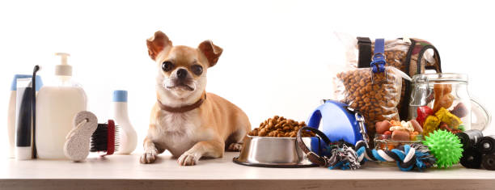

Adopt and Make 2 Lives Better
Adopt and Make 2 Lives Better
Pet Care
Make sure your new adoption is most comfortable!
- Do you have any other pets at home?
- If so, will your new adoption be compatible with other pets at home?
- Ensure that there is no one with allergies to your new puppy at home.
- Take note of the breed of dog you are adopting and ensure your living arrangements are appropriate.
- Make sure there is plenty of outdoor space if it is a larger growing breed!
- Ensure you have a plan for the dogs care in case you are absent for several days.
- Make sure to be patient with your new adoption, especially if it is a puppy!
- Remember, pet care includes quality time and emotional support as well!
